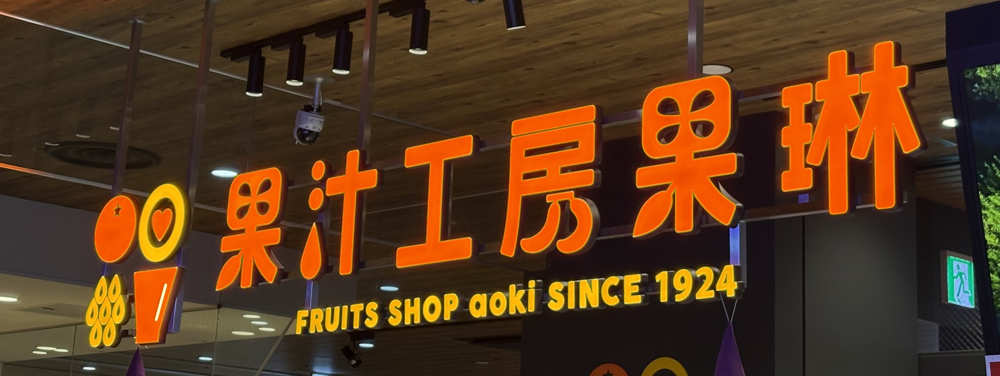
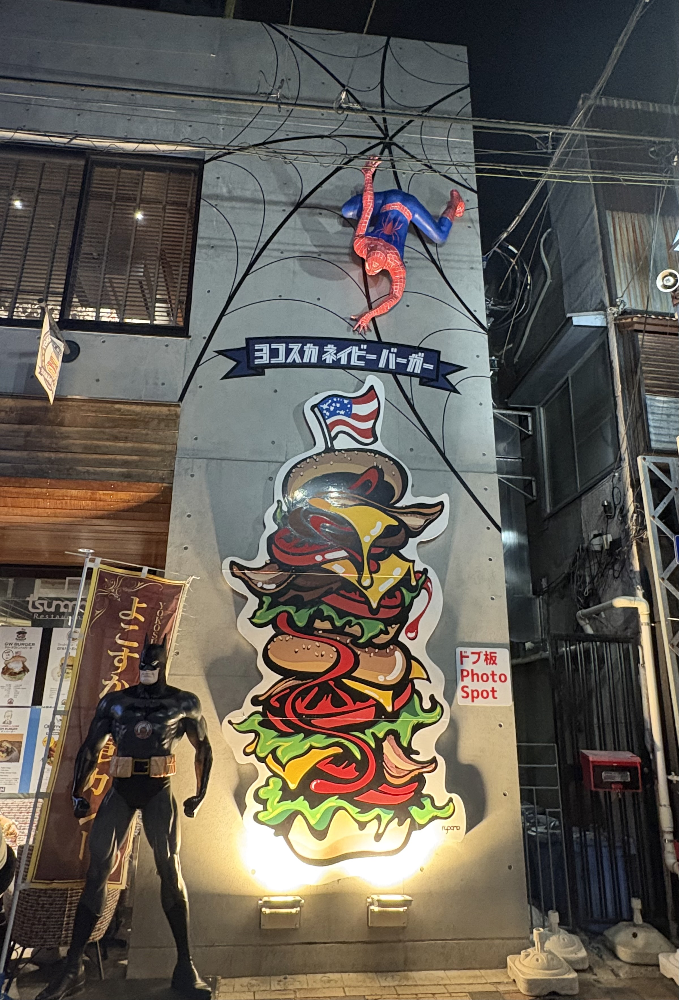
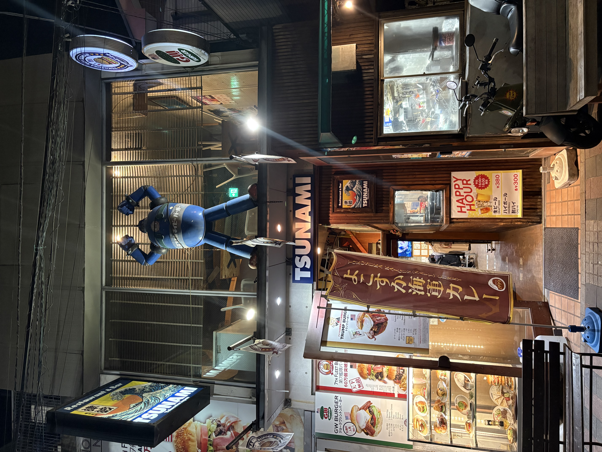
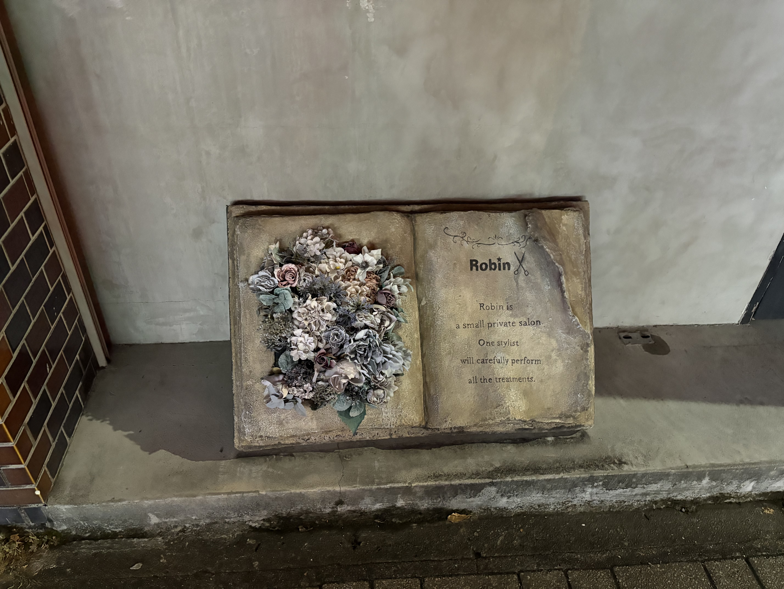
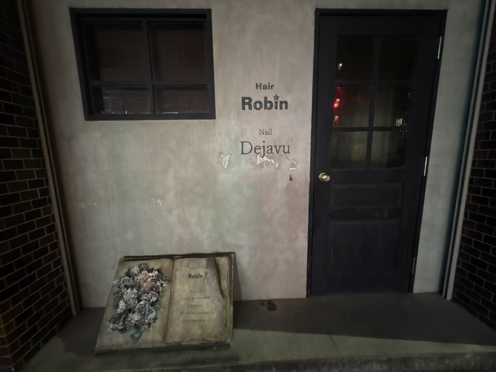

一目でわかる看板
撮影日：10/15 場所：ショッピングモール 撮影者：自分
この看板を一目見るだけでどういったお店なのかは大体想像できると思います。実際にフルーツジュースのお店で、看板の色も相まってフレッシュなジュースが飲めそうだなと感じます。文字の一部を変形させたり、そそられる色にするなど、沢山の工夫がされていて面白いなと感じました。

有名なキャラクターを使った看板
撮影日：10/15 場所：どぶ板通り（横須賀） 撮影者：自分
まず、どぶ板通りにはアメリカンなお店がたくさんあり、この２つの画像のお店はネイビーバーガーのお店（同じお店）です。アメリカを象徴するキャラクターを使用することで、観光客も外国の方たちにもわかりやすく、ワクワクする看板だと思いました。


おしゃれな看板
撮影日：10/15 場所：商店街の近く 撮影者：自分
一見何のお店かわかりませんが、この看板に目を惹かれます。文字をよく見ると美容院だということがわかりますし、何だかおしゃれなお店なのではないかと思い込みます。人間の心理も考えられている興味深い看板だと思いました。

